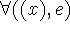
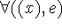

It might be supposed that in a mathematical theory of computation one need only consider computable functions. However, mathematical physics is carried out in terms of real valued functions which we not computable but only approximable by computable functions.
We shall consider several successive extensions of the class
 . First we adjoin the universal quantifier
to the operations used to define new functions. Suppose e is a form
in a variable x and other variables associated with the space
. First we adjoin the universal quantifier
to the operations used to define new functions. Suppose e is a form
in a variable x and other variables associated with the space  of truth values. Then
of truth values. Then

is a new form in the remaining variables also associated with
 .  has the value T for given values of the remaining
variables if for all values of x,e has the value T. has
the value F if for at least one value of x,e has the value F. In the
remaining case, i.e. for some values of x,e has the value T and for
all others e is undefined, is undefined.
.  has the value T for given values of the remaining
variables if for all values of x,e has the value T. has
the value F if for at least one value of x,e has the value F. In the
remaining case, i.e. for some values of x,e has the value T and for
all others e is undefined, is undefined.
If we allow the use of the universal quantifier to form new
propositional forms for use in conditional forms, we get a class of
functions which may well be called the class of functions
hyper-arithmetic over  since in the case where
since in the case where  = on the integers, consists of Kleene's
hyper-arithmetic functions.
= on the integers, consists of Kleene's
hyper-arithmetic functions.
Our next step is to allow the description operator . stands for the unique x such that p(x) is true. Unless there is such an x and it is unique, is undefined. In the case of the integers can be defined in terms of the universal quantifier using conditional expressions, but this does not seem to be the case in domains which are not effectively enumerable, and one may not wish to do so in domains where enumeration is unnatural.
The next step is to allow quantification over functions. This
gets us to Kleene's [5] analytic hierarchy and presumably allows the
functions used in analysis. Two facts are worth noting. First refers to all functions on the domain and
not just the computable ones. If we restrict quantification to
computable functions, we get different results. Secondly, if we allow
functions which can take themselves as arguments, it is difficult to
assign a meaning to the quantification. In fact, we are apparently
confronted with the paradoxes of naive set theory.